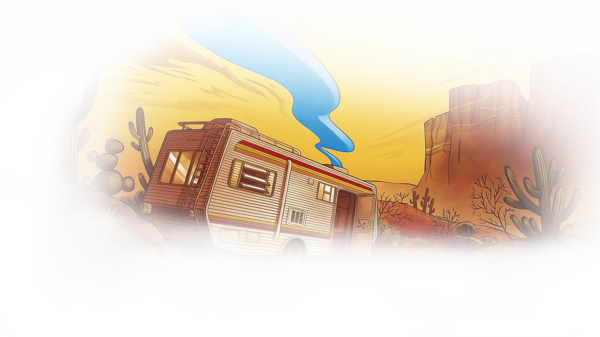

Season 1

The Witcher
O mutante Geralt de Rívia é um caçador de monstros que luta para encontrar seu lugar num mundo onde as pessoas muitas vezes são mais perversas que as criaturas selvagens. Assista o quanto quiser.

Friends
Friends conta a história de Ross, Rachel, Mônica, Chandler, Joey e Phoebe que formam um grupo de amigos. Os seis passam por situações típicas da idade, como a entrada na vida adulta, desilusões amorosas e tomadas de decisões profissionais.
Breaking Bad
Um professor do secundário com cancro do pulmão terminal junta-se a um ex-aluno para fabricar e vender metanfetaminas como forma de garantir o futuro da sua família. Veja tudo o que quiser.


Rick and Morty
O show gira em torno das aventuras dos membros da família Smith, que consiste nos pais Jerry e Beth, seus filhos Summer e Morty, e o pai de Beth, chamado Rick Sanchez, que mora com eles como hóspede.

This is Us
This Is Us apresenta a história de três pessoas nascidas no mesmo dia, dois homens e uma mulher. A trama navega entre os anos 1980 e os dias atuais, mostrando a infância de cada uma delas em contraste com a vida adulta.